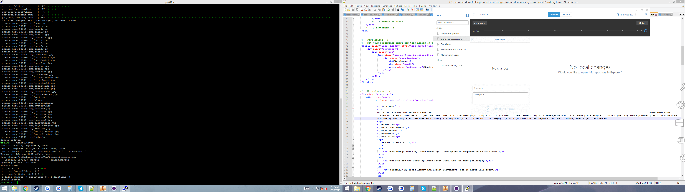

Writting is a way for me to straighten my thoughts out. I love to write on Quora, if you have not already checked out my answers, then read some. I also write short stories if I get the free time or if the idea pops in my mind. If you want to read some of my work message me and I will send you a sample. I do not post any works pubically as of now because they are personal and mostly not completed. Besides short story writing and quora, I like to think deeply. (I will go into further depth about the following when I get the chance).
Platonism
Aristoteltanism
Kantianism
Humanism
Absurdism
"Nightfall" by Isaac Asimov and Robert Silverberg. Sci-Fi meets Philosophy.
"Ishmael" by Daniel Quinn. Great perspective book
"1984" by Isaac Asimov and Robert Silverberg. Had to read it for a class, did not take the class, finished it because it was so good.
"Heart of Darkness" by Joseph Conrad. Loved the writting
"Jane Eyre" by Charlotte Bronte. Outstanding writing
"Hitch Hiker's Guide to the Galaxy" by Douglass Adams. Who doesn't love this book?
"Shogun" by James Clavell. Great story
"How Not to Be Wrong" by Jordan Ellenberd. Amazing guide to mathmatical thinking
A Series of Unfortunate Events book series by Lemony Snicket. Childhood stories that are irresistible to read
"How Not to Be Wrong" by Jordan Ellenberd. Amazing guide to mathmatical thinking
"The Lost City of Z" by David Grann. Only a little bit in, but I love it
"On Writing" by Stephen King. To get rid of writer block
"The Man Who Mistook His Wife for a Hat: And Other Clinical Tales" by Oliver Sacks. Really deep philosophy brought out through mind bending lucid examples
"Catcher in the Rye" by J. D. Salinger. Something to take away
"We are Legion, (We are BOB)" by Dennis E. Taylor. Audiobook. Loving the book so far
"Fahrenheit 451" by Robert Bevan.
"Critical Failures" by Robert Bevan
"War and peace" by Leo Tolstoy.
"Off to Be the Wizard" by Scott Meyer.
"Lord Jim" by Joseph Conrad. Liked "heart of Darkness"
"War and peace" by Leo Tolstoy.
"The Grand Design" and "The Universe in a Nutshell" by Stephen Hawking.
"Unbroken" by Laura Hillenbrand.
"Now" by Richard Muller. Following him on Quora
"The Glass Bead Game" by Hermann Hesse.
"Catch-22" by joseph Heller.
“I'd far rather be happy than right any day.” ― Douglas Adams, The Hitchhiker's Guide to the Galaxy
“Would it save you a lot of time if I just gave up and went mad now?” ― Douglas Adams, The Hitchhiker's Guide to the Galaxy
“There's a difference between knowing the path and walking the path” ― Morpheus
“Ring the bells that still can ring; Forget your perfect offering; There is a crack, a crack in everything; That's how the light gets in. ” ― Leonard Cohen, Anthem
"And love is love is love is love is love is love is love is love, cannot be killed or swept aside...Now fill the world with music, love, and pride." - Lin Manuel
“Be generous, it's a sympton of courage; if you fear you are selfish” ― In a book at the Isabella Gardner Mueseum
"Perhaps the secret of living well is not in having all the answers but in pursuing unanswerable questions in good company." - Rachel Naomi Remen
“The most beautiful thing we can experience is the mysterious. It is the source of all true art and science. He to whom the emotion is a stranger, who can no longer pause to wonder and stand wrapped in awe, is as good as dead —his eyes are closed. The insight into the mystery of life, coupled though it be with fear, has also given rise to religion. To know what is impenetrable to us really exists, manifesting itself as the highest wisdom and the most radiant beauty, which our dull faculties can comprehend only in their most primitive forms—this knowledge, this feeling is at the center of true religiousness.” ― Albert Einstein
Peaky Blinders
Star Wars
Lord of the Rings
The Little Prince
Lord of the Rings
Too many to list
I enjoy pretty much any music besides Christmas music after December, pop-music, and any pop rap or country.The bands I come back to most of the time are:
Sylvan Esso
The Lumineers
Odeza
The Glitch Mob
Radical Face
The Oh Hellos
Edward Sharpe and the Magnetic Zeros
Mounika
Mura Masa
Grouplove
Frank Sinatra
Rolling Stones(Could get lost forever in good old rock and roll)
The Last Lecture(Video) by Randy Pausch
VSauce-Michael Stevens and Jake Roper
Tom Scott
Simone Geirtz
Sally Le Page
Veritasium
Cody's Lab
The Dictionary of Obscure Sorrows
Minute Physics
The BackYard Scientist
Inspire to Make
Smarter Every Day
John and Hank Green
Vanessa Hill
When I write on this website I try to use google docs to write out large chunks. However, sometimes I need to fix somethings, update, or just need to write things down so, sorry for any spelling mistakes. Any editing has to be made to the html file, which is eiter done through notepadd++(on Windows), vim or nano(on Linux), or on my phone(through github). Then I connect to the Raspberry Pi sitting on my desk at home through ssh either on Putty or JuizeSSh on my phone. I had the nerdiest moment of my life when I realized I could connect to my RPi on my phone. Then I update the server through some bash script I wrote which pulls the website files onto the server and restarts the server.
I write with, even as I write this, with a mug of black tea infront of me:no milk, sugar, or extras. In the background, I play some of my music.